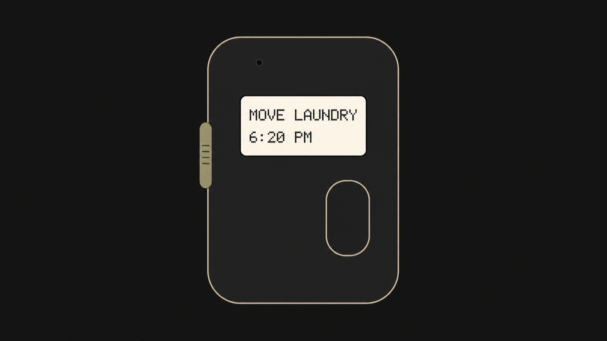
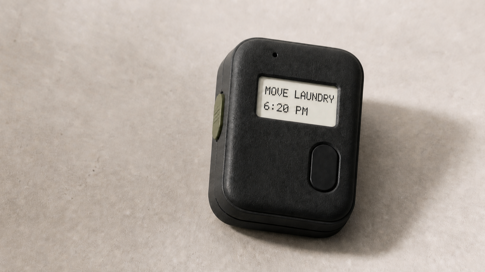

Technical Documentation
Re-Mind Timer
A local-first, radio-free reminder device design: tactile alarms with a supervisor-owned schedule and an optional background speech worker.


The Idea
Re-Mind begins with a simple preference: a reminder should be local, tactile, and hard to lose. The work is a design and a staged engineering plan for a pocket device, not a finished hardware product.
The design keeps alarm obligations independent of a phone, account, radio, or network connection. Spoken capture is useful when it can help, but it is intentionally not allowed to become the authority for time, storage, or whether an alarm fires.
Interaction and Product Principles
- Local operation: no radio hardware, cloud sync, accounts, or telemetry in the planned device.
- Two-button handling: record to capture; action to address an active reminder.
- Haptic-only operation is sufficient; audible output is planned as a per-reminder opt-in.
- Ambiguous or missing times reject rather than being guessed.
- Short ACTION can temporarily silence a firing item for one minute; completion is a 0.75-second hold.
Two-Processor Architecture
The schedule path is deliberately asymmetric. The always-on supervisor owns capture, durable storage, RTC arming, firing, deferral, and completion. A separately powered background worker may later turn audio into labels, but its absence must never prevent the alarm path.
Capture / buttons / RTC
│
v
+---------------------------------------------+
| Always-on supervisor |
| time · storage · scheduling · alarm firing |
+----------------------+----------------------+
| versioned job/result protocol
v
+---------------------------------------------+
| Background speech worker |
| optional transcription and label generation |
+---------------------------------------------+
The speech worker is non-authoritative: labels may arrive later; alarms do not wait.
Current Host-Validated Software
The current work is a host reference for reminder semantics, recurrence, persistence, protocol framing, backup and iCalendar behavior, and supporting tooling. It is designed to make schedule correctness testable before a physical implementation is selected.
Host evidence shows deterministic semantic and filesystem behavior on a Mac. It does not turn the reference implementation into device firmware or a validated physical product.
Tech Stack
| Core schedule reference | C++17 |
| Validation and tooling | Python |
| Planned local interface | TypeScript PWA |
| Planned supervisor role | Always-on time, storage, RTC, and alarm ownership |
| Planned speech role | Background, stateless label/transcription work |
Validation Evidence
The pre-hardware validation report records 7/7 validation stages passing: 1,183 Python tests passed, 3 were skipped, and all 19 host-reference targets passed. This is evidence for the tested host reference and its deterministic semantics.
Evidence boundary: this does not establish natural-speech accuracy, microphone performance, enclosure behavior, flash wear, brownouts, RTC wake, UART or USB electrical behavior, power or runtime, e-paper, haptics, button timing, WebSerial, or browser compatibility. D-001 has zero recorded clips, so natural-speech accuracy remains unproven.
Physical Concept and Planned Hardware
The studies above explore a compact two-button object with a visible reminder display. They are directional concepts for a planned prototype, not a claim that the pictured screen, enclosure, electronics, haptics, or power system has been built or measured.
Hardware selection remains gated by physical evidence, including the supervisor sleep-current and energy measurements. The plan’s four-day use case is a target to prove, not an achieved runtime; the early confirmation-latency figures are likewise measurement candidates, not established limits.
Local-First PWA Plan
The planned companion is a hosted, installable, offline-capable PWA for local reminder management, backup, and correction. Chromium browsers are planned to use WebSerial where supported, with a USB file-transfer fallback for modern browsers. This remains a plan pending browser and device evidence.
Next Steps
- Collect and score natural recordings to resolve D-001’s speech feasibility gate.
- Measure supervisor power, wake behavior, feedback timing, and the selected physical controls.
- Validate display, haptic, storage, RTC, UART, USB, and failure behavior on hardware.
- Prove the PWA transport and offline behavior across the intended browser matrix.
- Only then integrate the background speech service and pursue a custom PCB or enclosure.